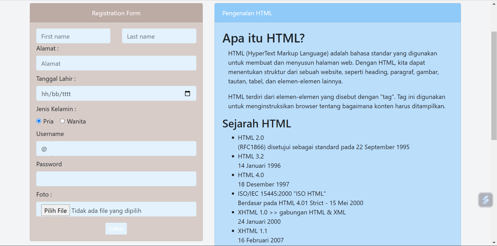
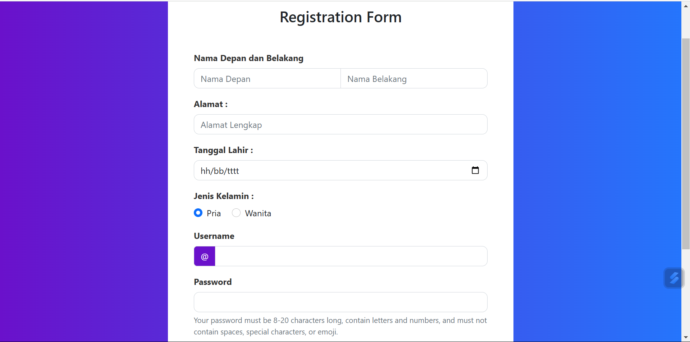

Tentang Saya
Halo, nama saya Novita Fadilah Datuamas dengan NIM F55123002.
Saya seorang mahasiswi semester 3 jurusan Teknologi Informasi di Universitas Tadulako.
Saya memiliki beberapa keterampilan di bidang komputer. Saya bersemangat untuk terus belajar dan berkembang dalam bidang ini.
Portofolio

